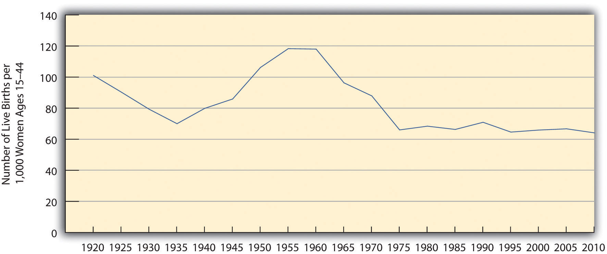
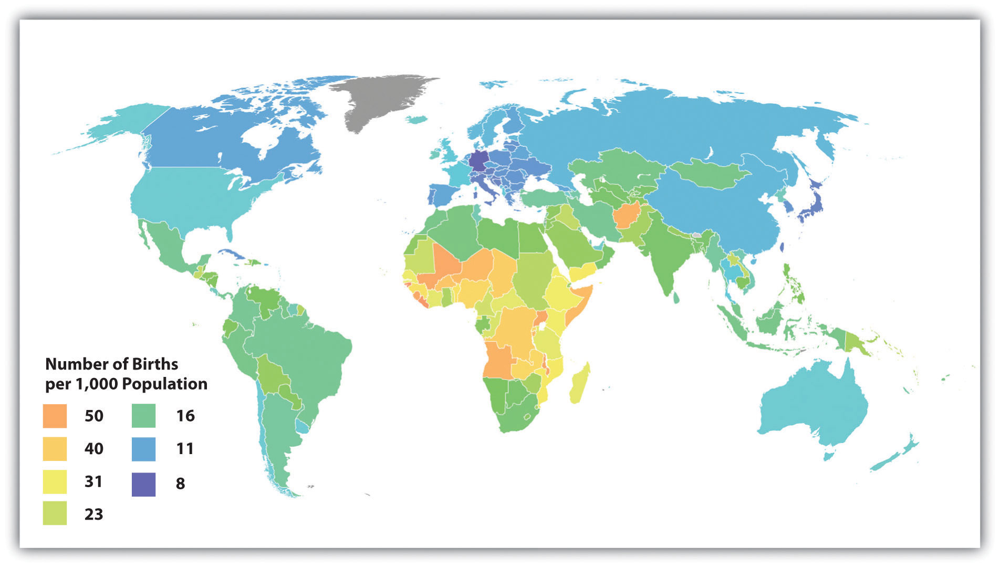
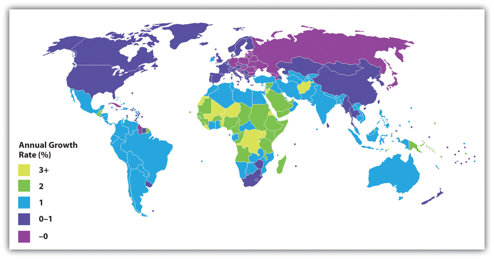
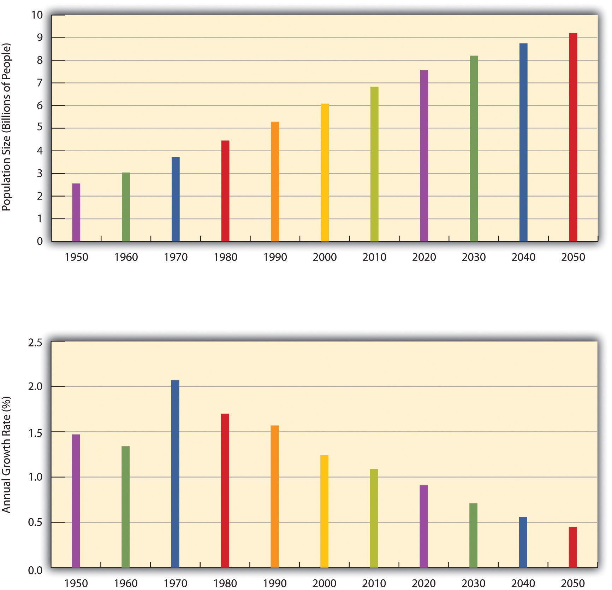
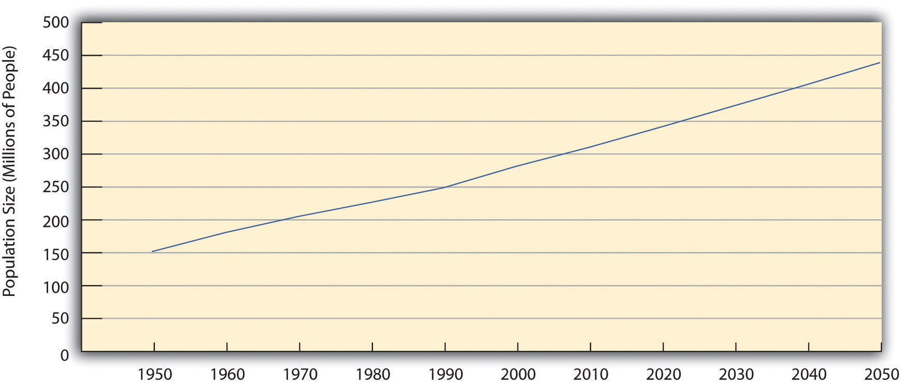

“India’s Air the World’s Unhealthiest,” the headline said. A study by researchers at Columbia and Yale Universities ranked India as having the worst air pollution on the planet. India’s levels of one component of air pollution, fine particulate matter, were almost five times higher than the safe level for humans. The head of an Indian environmental organization attributed her country’s air problem to its numbers of motor vehicles. Although India has fewer vehicles per capita than wealthy nations, its vehicles are very polluting, and it still has a very high number of vehicles because of its huge population. Adding that India has very weak emission standards, she called for stronger standards: “We need to take big steps or the problem will overwhelm us.”
Source: Timmons & Vyawahare, 2012Timmons, H., & Vyawahare, M. (2012, February 1). India’s air the world’s unhealthiest, study says. New York Times. Retrieved from http://india.blogs.nytimes.com/2012/2002/2001/indias-air-the-worlds-unhealthiest-study-says.
This news story reminds us that air pollution is a worldwide problem. The story also reminds us that a major reason for India’s air pollution problem is its sheer population size, as India ranks second in the world with 1.2 billion people, just behind China. As India’s example suggests, population and environmental problems are often intertwined.
This chapter examines problems such as food scarcity and climate change associated with population growth and the environment. We will see that these problems raise complex issues without easy solutions, but we will also see that these are urgent problems that must be addressed. Indeed, it is no exaggeration to say that the fate of the earth depends on adequate solutions to these problems.
As usual, the major sociological perspectives offer insights that help us understand issues relating to population growth and to the environment. Table 15.1 "Theory Snapshot" summarizes their assumptions.
Table 15.1 Theory Snapshot
| Theoretical perspective | Major assumptions |
|---|---|
| Functionalism | Population and the environment affect each other. Normal population growth is essential for any society, but population growth that is too great or too little leads to various problems. Environmental problems are to be expected in an industrial society, but severe environmental problems are dysfunctional. |
| Conflict theory | Population growth is not a serious problem because the world has sufficient food and other resources, all of which must be more equitably distributed. The practices of multinational corporations and weak regulation of these practices account for many environmental problems. |
| Symbolic interactionism | People have certain perceptions and understandings of population and environmental issues. Their social backgrounds affect these perceptions, which are important to appreciate if population and environmental problems are to be addressed. |
Functionalism considers population growth and its various components (birth, death, and migration) as normal and essential processes for any society. A society certainly cannot survive if it loses members, but it can thrive only if it grows so that it can meet future challenges. Functionalism also considers pollution and other environmental problems to be an inevitable consequence of today’s society, but it assumes that environmental problems that are too severe are certainly dysfunctional for society.
The reasons for the importance of population growth depend on the type of a society’s economy. For example, agricultural and other nonindustrial societies need high birth rates to counteract their high death rates. Industrial societies have lower death rates, but they still need to be able to hire younger workers as older workers retire, while new industries need to be able to count on hiring enough young workers with the skills and knowledge these industries require. However, population growth that is too rapid and severe can be dysfunctional for a society. Such growth creates crowding and can use up valuable resources such as food, and it can also harm the environment.
As this discussion suggests, functionalism emphasizes how the population and environment affect each other. Population growth leads to certain environmental problems, as we shall see, while environmental problems have important consequences for the populations for whole nations and even the world. At the same time, several industrial nations today actually do not have enough population growth to provide sufficient numbers of younger workers to replace retiring workers and to maintain their tax bases. While too much population growth causes many problems, then, too little population growth also causes problems.
Conflict theory does not consider population growth to be a serious problem. Instead, it assumes that the earth has enough food and other resources to meet the needs of its growing population. To the extent that food shortages and other problems meeting these needs exist, these problems reflect decisions by economic and political elites in poor nations to deprive their peoples of food and other resources; they also reflect operations by multinational corporations that deprive these nations of their natural resources. If population growth is a problem, then, it is a problem not because there is a lack of food and other resources, but rather because these resources are not distributed fairly. To the extent this is true, efforts to satisfy the world’s need for food and other resources should focus on distributing these resources more equitably rather than on limiting population growth.
At the same time, conflict theory recognizes that many poor nations still have population growth that is more than desirable. The theory blames this growth on the failure of these nations’ governments to make contraceptives readily available and to do everything possible to increase women’s education and independence (which both reduce their birth rates).
In regard to a particular population issue we will discuss (immigration), conflict theory emphasizes the role played by racial and ethnic prejudice in popular views on immigration. It generally favors loosening restrictions on immigration into the United States and making it possible for undocumented immigrants to become US citizens if they so desire.
Conflict theory also assumes that the world’s environmental problems are not inevitable and instead arise from two related sources. First, multinational corporations engage in practices that pollute the air, water, and ground. Second, the United States and other governments fail to have strong regulations to limit corporate pollution, and they fail to adequately enforce the regulations they do have.
Symbolic interactionism offers four kinds of understandings of population and environmental problems. First, it seeks to understand why people engage or do not engage in activities related to population growth and other problems (e.g., the use of contraception) and to environmental problems (e.g., recycling). In order to address population growth and environmental problems, it is important to understand why people become involved, or fail to become involved, in various activities related to these problems.
Second, it emphasizes people’s perceptions of population and environmental problems. To the extent that public attitudes play a key role in the persistence of these problems, it is important to know the reasons for public views on these problems so that efforts to address the problems may be better focused.
Next, symbolic interactionism assumes that population and environmental problems are to some extent social constructions (see Chapter 1 "Understanding Social Problems"), as these problems do not come to be considered social problems unless sufficient numbers of people and/or influential organizations in the public and private sectors recognize them as problems. For example, lead was a serious health problem long before the US government banned it in paint in 1977 and in gasoline in 1990. As early as the first few years of the twentieth century, scientists were calling attention to the toxic properties of lead paint and more generally of lead itself. Still, lead was added to gasoline in 1922 to raise octane levels. Despite growing evidence over the next few decades of lead’s toxic qualities, various industries continued to say that lead was safe for the general public (Michaels, 2008).Michaels, D. (2008). Doubt is their product: How industry’s assault on science threatens your health. New York, NY Oxford University Press. The banning of lead was ultimately due to the efforts of environmental groups and to the fact that the growing amount of scientific evidence of lead’s dangers became overwhelming
Finally, symbolic interactionism emphasizes that people from different social backgrounds and from different cultures may have different understandings of population issues and of environmental issues. For example, someone who grows up in a rural area may consider even a small city to be incredibly crowded, while someone who grows up in a large city may consider a small city to be too tiny and lacking in museums, restaurants, and other amenities that large cities offer.
Population change often has weighty consequences throughout a society. As we think about population change, we usually think about and worry about population growth, but population decline is also a concern. Consider the experience of Michigan (Dzwonkowski, 2010).Dzwonkowski, R. (2010, September 19). New leaders can’t shrink from Michigan realities. Detroit Free Press, p. 2A. Like several other northern states, Michigan has lost population during the past few decades. Its birth rate has declined by 21 percent from 1990, and elementary school populations dropped as a result. Several schools lost so many students that they had to close, and others are in danger of closing. In addition, many more people have been moving out of Michigan than moving in. Because many of those moving out are young, college-educated adults, they take with them hundreds of millions of dollars in paychecks away from Michigan’s economy and tax revenue base. They also leave behind empty houses and apartments that help depress the state’s real estate market. Because of the loss of younger residents from the declining birth rate and out-migration, Michigan’s population has become older on the average. This shift means that there is now a greater percentage of residents in their older years who need state services.
Among other consequences, then, Michigan’s population decline has affected its economy, educational system, and services for its older residents. While Michigan and other states are shrinking, states in the southern and western regions of the nation are growing, with their large cities becoming even larger. This population growth also has consequences. For example, schools become more crowded, pressuring communities to hire more teachers and either enlarge existing schools or build new ones. The population growth also strains hospitals, social services, and many other sectors of society.
This brief discussion of US cities underscores the various problems arising from population growth and decline. These are not just American problems, as they play out across the world. The remainder of this section introduces the study of population and then examines population problems in greater depth.
We have commented that population change is an important source of other changes in society. The study of population is so significant that it occupies a special subfield within sociology called demographyThe study of population growth and changes in population composition.. To be more precise, demography is the study of changes in the size and composition of population. It encompasses several concepts: fertility and birth rates, mortality and death rates, and migration. Let’s look at each of these briefly.
FertilityThe number of live births. refers to the number of live births. Demographers use several measures of fertility. One measure is the crude birth rateThe number of live births for every 1,000 people in a population in a given year., or the number of live births for every 1,000 people in a population in a given year. We call this a “crude” birth rate because the population component consists of the total population, not just the number of women or even the number of women of childbearing age (commonly considered 15–44 years).
A second measure is the general fertility rateThe number of live births per 1,000 women aged 15–44 years. (also just called the fertility rate or birth rate), or the number of live births per 1,000 women aged 15–44 (i.e., of childbearing age). The US general fertility rate for 2010 was about 64.7 (i.e., 64.7 births per 1,000 women aged 15–44) (Sutton & Hamilton, 2011).Sutton, P. D., & Hamilton, B. E. (2011). Recent trends in births and fertility rates through 2010. Washington, DC: Centers for Disease Control and Prevention.
A third measure is the total fertility rateThe number of children an average woman is expected to have in her lifetime, sometimes expressed as the number of children an average 1,000 women are expected to have in their lifetimes., or the number of children an average woman is expected to have in her lifetime (taking into account that some women have more children and some women have fewer or no children). This measure often appears in the news media and is more easily understood by the public than either of the first two measures. In 2010, the US total fertility rate was about 1.93 (or 1,930 births for every 1,000 women) (Hamilton, Martin, & Ventura, 2011).Hamilton, B. E., Martin, J. A., & Ventura, S. J. (2011). Births: Preliminary data for 2010. National Vital Statistics Reports, 60(2), 1–14.
As Figure 15.1 "US General Fertility Rate, 1920–2010" indicates, the US general fertility rate has changed a lot since 1920, dropping from 101 (per 1,000 women aged 15–44) in 1920 to 70 in 1935, during the Great Depression, before rising afterward until 1955. (Note the very sharp increase from 1945 to 1955, as the post–World War II baby boom began.) The fertility rate then fell steadily after 1960 until the 1970s but has remained rather steady since then, fluctuating only slightly between 65 and 70 per 1,000 women aged 15–44.
Figure 15.1 US General Fertility Rate, 1920–2010
Sources: Data from Hamilton, B. E., Martin, J. A., & Ventura, S. J. (2011). Births: Preliminary data for 2010. National Vital Statistics Reports, 60(2), 1–13; Martin, J. A., Hamilton, B. E., Sutton, P. D., Ventura, S. J., Menacker, F., Kirmeyer, S., & Mathews, T. J. (2009). Births: Final data for 2006. National Vital Statistics Reports, 57(7), 1–102; US Census Bureau. (1951). Statistical abstract of the United States: 1951. Washington, DC: US Government Printing Office.
Fertility rates differ around the world and are especially high in poor nations (see Figure 15.2 "Crude Birth Rates around the World, 2008 (Number of Births per 1,000 Population)"). Demographers identify several reasons for these high rates (Weeks, 2012).Weeks, J. R. (2012). Population: An introduction to concepts and issues (11th ed.). Belmont, CA: Wadsworth.
Figure 15.2 Crude Birth Rates around the World, 2008 (Number of Births per 1,000 Population)
Source: Adapted from http://en.wikipedia.org/wiki/File:Birth_rate_figures_for_countries.PNG.
First, poor nations are usually agricultural ones. In agricultural societies, children are an important economic resource, as a family will be more productive if it has more children. This means that families will ordinarily try to have as many children as possible. Second, infant and child mortality rates are high in these nations. Because parents realize that one or more of their children may die before adulthood, they have more children to make up for the anticipated deaths.
A third reason is that many parents in low-income nations prefer sons to daughters, and, if a daughter is born, they try again for a son. Fourth, traditional gender roles are often very strong in poor nations, and these roles include the belief that women should be wives and mothers above all. With this ideology in place, it is not surprising that women will have several children. Finally, contraception is uncommon in poor nations. Without contraception, many more pregnancies and births certainly occur. For all these reasons, then, fertility is much higher in poor nations than in rich nations.
Poor nations have higher birth rates for several reasons. One reason is the agricultural economies typical of these nations. In these economies, children are an important economic resource, and families will ordinarily try to have as many children as possible.
Image courtesy of R. Kalden, Voice of America, http://commons.wikimedia.org/wiki/File:Children_near_renovation_of_Jawaharlal_Nehru_Stadium_in_New_Delhi_2010-02-24.JPG .
MortalityThe number of deaths. is the flip side of fertility and refers to the number of deaths. Demographers measure it with the crude death rateThe number of deaths for every 1,000 people in a population in a given year., the number of deaths for every 1,000 people in a population in a given year. We call this a “crude” death rate because the population component consists of the total population and does not take its age distribution into account. All things equal, a society with a higher proportion of older people should have a higher crude death rate. Demographers often calculate age-adjusted death rates that adjust for a population’s age distribution.
Another important demographic concept is migrationThe movement of people into or out of specific regions., the movement of people into and out of specific regions. Since the dawn of human history, people have migrated in search of a better life, and many have been forced to migrate by ethnic conflict or the slave trade.
Several classifications of migration exist. When people move into a region, we call it in-migration, or immigration; when they move out of a region, we call it out-migration, or emigration. The in-migration rate is the number of people moving into a region for every 1,000 people in the region, while the out-migration rate is the number of people moving from the region for every 1,000 people. The difference between the two is the net migration rate (in-migration minus out-migration). Recalling our earlier discussion. Michigan has had a net migration of less than zero, as its out-migration has exceeded its in-migration.
Migration can also be either domestic or international in scope. Domestic migration happens within a country’s national borders, as when retired people from the northeastern United States move to Florida or the Southwest. International migration happens across national borders. When international immigration is heavy, the effect on population growth and other aspects of national life can be significant, as can increased prejudice against the new immigrants. Domestic migration can also have a large impact. The great migration of African Americans from the South into northern cities during the first half of the twentieth century changed many aspects of those cities’ lives (Wilkerson, 2011).Wilkerson, I. (2011). The warmth of other suns: The epic story of America’s great migration New York, NY: Vintage Books. Meanwhile, the movement during the past few decades of northerners into the South and Southwest also had quite an impact: The housing market initially exploded, for example, and traffic increased.
Now that you are familiar with some basic demographic concepts, we can discuss population change in more detail. Three of the factors just discussed determine changes in population size: fertility (crude birth rate), mortality (crude death rate), and net migration. The natural growth rateThe difference between the crude birth rate and the crude death rate. is simply the difference between the crude birth rate and the crude death rate. The US natural growth rate is about 0.6 percent (or 6 per 1,000 people) per year. When immigration is also taken into account, the total population growth rate has been almost 1.0 percent per year (Rosenberg, 2012).Rosenberg, M. (2012). Population growth rates. Retrieved from http://geography.about.com/od/populationgeography/a/populationgrow.htm.
Figure 15.3 "International Annual Population Growth Rates (%), 2005–2010" depicts the annual population growth rate (including both natural growth and net migration) of all the nations in the world. Note that many African nations are growing by at least 3 percent per year or more, while most European nations are growing by much less than 1 percent or are even losing population, as discussed earlier. Overall, the world population is growing by about 80 million people annually (Population Reference Bureau, 2012).Population Reference Bureau. (2012). World population growth, 1950–2050. Retrieved February 4, 2012, from http://www.prb.org/Educators/TeachersGuides/HumanPopulation/PopulationGrowth.aspx.
Figure 15.3 International Annual Population Growth Rates (%), 2005–2010
Source: Adapted from http://lt.wikipedia.org/wiki/Vaizdas:Population_growth_rate_world_2005-2010_UN.PNG.
To determine how long it takes for a nation to double its population size, divide the number 70 by its population growth rate. For example, if a nation has an annual growth rate of 3 percent, it takes about 23.3 years (70 ÷ 3) for that nation’s population size to double. As you can see from the map in Figure 15.3 "International Annual Population Growth Rates (%), 2005–2010", several nations will see their population size double in this time span if their annual growth continues at its present rate. For these nations, population growth will be a serious problem if food and other resources are not adequately distributed.
Demographers use their knowledge of fertility, mortality, and migration trends to make projections about population growth and decline several decades into the future. Coupled with our knowledge of past population sizes, these projections allow us to understand population trends over many generations. One clear pattern emerges from the study of population growth. When a society is small, population growth is slow because there are relatively few adults to procreate. But as the number of people grows over time, so does the number of adults. More and more procreation thus occurs every single generation, and population growth then soars in a virtual explosion.
We saw evidence of this pattern when we looked at world population growth. When agricultural societies developed some 12,000 years ago, only about 8 million people occupied the planet. This number had reached about 300 million about 2,100 years ago, and by the fifteenth century it was still only about 500 million. It finally reached 1 billion by about 1850; by 1950, only a century later, it had doubled to 2 billion. Just fifty years later, it tripled to more than 6.8 billion, and it is projected to reach more than 9 billion by 2050 (see Figure 15.4 "Total World Population, 1950–2050") and 10 billion by 2100 (Gillis & Dugger, 2011).Gillis, J., & Dugger, C. W. (2011, May 4). UN forecasts 10.1 million by century’s end. New York Times, p. A1.
Figure 15.4 Total World Population, 1950–2050
Source: Data from US Census Bureau. (2012). Statistical abstract of the United States: 2012. Washington, DC: US Government Printing Office. Retrieved from http://www.census.gov/compendia/statab.
Eventually, however, population growth begins to level off after exploding, as explained by demographic transition theory, discussed later. We see this in the bottom half of Figure 15.4 "Total World Population, 1950–2050", which shows the average annual growth rate for the world’s population. This rate has declined over the last few decades and is projected to further decline over the next four decades. This means that while the world’s population will continue to grow during the foreseeable future, it will grow by a smaller rate as time goes by. As Figure 15.3 "International Annual Population Growth Rates (%), 2005–2010" suggested, the growth that does occur will be concentrated in the poor nations in Africa and some other parts of the world. Still, even in these nations the average number of children a woman has in her lifetime dropped from six a generation ago to about three today.
Past and projected sizes of the US population appear in Figure 15.5 "Past and Projected Size of the US Population, 1950–2050 (in Millions)". The US population is expected to number about 440 million people by 2050.
Figure 15.5 Past and Projected Size of the US Population, 1950–2050 (in Millions)
Source: Data from US Census Bureau. (2012). Statistical abstract of the United States: 2012. Washington, DC: US Government Printing Office. Retrieved from http://www.census.gov/compendia/statab.
Thomas Malthus, an English economist who lived about two hundred years ago, wrote that population increases geometrically while food production increases only arithmetically. These understandings led him to predict mass starvation.
The numbers just discussed show that the size of the United States and world populations has increased tremendously in just a few centuries. Not surprisingly, people during this time have worried about population growth and specifically overpopulation. One of the first to warn about population growth was Thomas Malthus (1766–1834), an English economist, who said that population increases geometrically (2, 4, 8, 16, 32, 64, 128, 256, 512, 1024…). If you expand this list of numbers, you will see that they soon become overwhelmingly large in just a few more “generations.” Malthus (1798/1926)Malthus, T. R. (1926). First essay on population. London, United Kingdom: Macmillan. (Oringal work published 1798) said that food production increases only arithmetically (1, 2, 3, 4, 5, 6…) and thus could not hope to keep up with the population increase, and he predicted that mass starvation would be the dire result.
During the 1970s, population growth became a major issue in the United States and some other nations. Zero population growth, or ZPG, was a slogan often heard. There was much concern over the rapidly growing population in the United States and, especially, around the world, and there was fear that our “small planet” could not support massive increases in the number of people (Ehrlich, 1969).Ehrlich, P. R. (1969). The population bomb. San Francisco, CA: Sierra Club. Some of the most dire predictions of the time warned of serious food shortages by the end of the century.
Fortunately, Malthus and ZPG advocates were wrong to some degree. Although population levels have certainly soared, the projections in Figure 15.4 "Total World Population, 1950–2050" show the rate of increase is slowing. Among other factors, the development of more effective contraception, especially the birth control pill, has limited population growth in the industrial world and, increasingly, in poorer nations. Food production has also increased by a much greater amount than Malthus and ZPG advocates predicted.
Many experts continue to be concerned about overpopulation, as they feel it is directly responsible for the hunger and malnutrition that plague hundreds of millions of people in poor nations (Gillis, 2011).Gillis, J. (2011, June 5). A warm planet struggles to feed itself. New York Times, p. A1. One expert expressed this concern: “Every billion more people makes life more difficult for everybody—it’s as simple as that. Is it the end of the world? No. Can we feed 10 billion people? Probably. But we obviously would be better off with a smaller population” (Gillis & Dugger, 2011, p. A1).Gillis, J., & Dugger, C. W. (2011, May 4). UN forecasts 10.1 million by century’s end. New York Times, p. A1. Recognizing this problem, India has begun giving cash bonuses to poor, rural married couples, who typically have high fertility rates, to wait to have children, and it has intensified its encouragement of contraception (Yardley, 2010).Yardley, J. (2010, August 22). India tries using cash bonuses to slow birthrates. New York Times, p. A8.
However, other experts say the world’s resources remain sufficient and minimize the problem of overpopulation. They acknowledge that widespread hunger in Africa and other regions does exist. However, they attribute this problem not to overpopulation and lack of food but rather to problems in distributing the sufficient amount of food that does in fact exist. As an official for Oxfam International explained, “Today’s major problems in the food system are not fundamentally about supply keeping up with demand, but more about how food gets from fields and on to forks” (2011).King, R. (2011, June 1). Global food crisis: The challenge of changing diets. The Guardian. Retrieved from http://www.guardian.co.uk/global-development/poverty-matters/2011/jun/01/global-food-crisis-changing-diets. The official added that enough grain (cereal and soy) exists to easily feed the world, but that one-third of cereal and 90 percent of soy feed livestock instead. Moving away from a meat-laden Western diet would thus make much more grain available for the world’s hungry poor.
Sociologists Stephen J. Scanlan and colleagues add that food scarcity results from inequalities in food distribution rather than from overpopulation: “[Food] scarcity is largely a myth. On a per capita basis, food is more plentiful today than any other time in human history…Even in times of localized production shortfalls or regional famines there has long been a global food surplus…A good deal of thinking and research in sociology…suggests that world hunger has less to do with the shortage of food than with a shortage of affordable or accessible food. Sociologists have found that social inequalities, distribution systems, and other economic and political factors create barriers to food access” (Scanlan, Jenkins, & Peterson, 2010, p. 35).Scanlan, S. J., Jenkins, J. C., & Peterson, L. (2010). The scarcity fallacy. Contexts, 9(1), 34–39.
This sociological view has important implications for how the world should try to reduce global hunger. International organizations such as the World Bank and several United Nations agencies have long believed that hunger is due to food scarcity, and this belief underlies the typical approaches to reducing world hunger that focus on increasing food supplies with new technologies and developing more efficient methods of delivering food. But if food scarcity is not a problem, then other approaches are necessary. According to Scanlan et al., these approaches involve reducing the social inequalities that limit poor nations’ access to food.
As an example of one such inequality, Scanlan et al. point out that poor nations lack the funds to import the abundant food that does exist. These nations’ poverty, then, is one inequality that leads to world hunger, but gender and ethnic inequalities are also responsible. Nations with higher rates of gender inequality and ethnic inequality have higher rates of hunger. In view of this fact, the authors emphasize that improvements in gender and ethnic equality are necessary to reduce global hunger: “International attention to food security should therefore shift from increasing food supply to regulating armed conflict, improving human rights, and promoting gender equity throughout the world—factors that reduce barriers to access and empower populations throughout the world to benefit from their food entitlements” (Scanlan et al., 2010, p. 39).Scanlan, S. J., Jenkins, J. C., & Peterson, L. (2010). The scarcity fallacy. Contexts, 9(1), 34–39.
As we consider whether overpopulation is the threat that Malthus and contemporary concerned scientists have considered it to be, it is important to appreciate demographic transition theoryA theory that links population growth to the level of technological development across three stages of social evolution., mentioned earlier. This theory links population growth to the level of technological development across three stages of social evolution and suggests that this growth slows considerably as nations become more industrialized.
In the first stage, coinciding with preindustrial societies, the birth rate and death rate are both high. The birth rate is high because of the lack of contraception and the several other reasons cited earlier for high fertility rates, and the death rate is high because of disease, poor nutrition, lack of modern medicine, and other problems. These two high rates cancel each other out, and little population growth occurs.
In the second stage, coinciding with the development of industrial societies, the birth rate remains fairly high, owing to the lack of contraception and a continuing belief in the value of large families, but the death rate drops because of several factors, including increased food production, better sanitation, and improved medicine. Because the birth rate remains high but the death rate drops, population growth takes off dramatically.
In the third stage, the death rate remains low, but the birth rate finally drops as families begin to realize that large numbers of children in an industrial economy are more of a burden than an asset. Another reason for the drop is the availability of effective contraception. As a result, population growth slows, and, as we saw earlier, it has become quite low or even gone into a decline in several industrial nations.
Demographic transition theory, then, gives us more reason to be cautiously optimistic regarding the threat of overpopulation: As poor nations continue to modernize—much as industrial nations did two hundred years ago—their population growth rates should start to decline.
Still, population growth rates in poor nations continue to be high, and, as already mentioned, gender and ethnic inequality helps allow rampant hunger to persist. Hundreds of thousands of women die in poor nations each year during pregnancy and childbirth. Reduced fertility would save their lives, in part because their bodies would be healthier if their pregnancies were spaced farther apart (Schultz, 2008).Schultz, T. P. (2008). Population policies, fertility, women’s human capital, and child quality. In T. P. Schultz & J. Strauss (Eds.), Handbook of development economics (Vol. 4, pp. 3249–3303). Amsterdam, Netherlands: North-Holland, Elsevier. Although world population growth is slowing, then, it is still growing too rapidly in poor nations. To reduce it further, more extensive family planning programs are needed, as is economic development in general: Women who are better educated and have more money tend to have lower fertility.
If population growth remains a problem in poor nations, population decline is a problem in some industrial nations. As noted earlier, some nations are even experiencing population declines, while several more are projected to have population declines by 2050 (Brooks, 2012).Brooks, D. (2012, March 13). The population implosion. New York Times, p. A25. For a country to maintain its population, the average woman needs to have 2.1 children, the replacement level for population stability. But several industrial nations, not including the United States, are below this level. Increased birth control is one reason for their lower fertility rates but so are decisions by women to stay in school longer, to go to work right after their schooling ends, and to postpone having their first child.
Ironically, these nations’ population declines have begun to concern demographers and policymakers (Haartsen & Venhorst, 2010).Haartsen, T., & Venhorst, V. (2010). Planning for decline: Anticipating on population decline in the Netherlands. Tijdschrift voor Economische en Sociale Geografie (Journal of Economic & Social Geography), 101(2), 218–227. Because people in many industrial nations are living longer while the birth rate drops, these nations are increasingly having a greater proportion of older people and a smaller proportion of younger people. In several European nations, there are more people 61 or older than 19 or younger. As this trend continues, it will become increasingly difficult to take care of the health and income needs of so many older persons, and there may be too few younger people to fill the many jobs and provide the many services that an industrial society demands. The smaller labor force may also mean that governments will have fewer income tax dollars to provide these services.
To deal with these problems, several governments have initiated pronatalistReferring to policies that encourage women to have children. policies aimed at encouraging women to have more children. In particular, they provide generous child-care subsidies, tax incentives, and flexible work schedules designed to make it easier to bear and raise children, and some even provide couples outright cash payments when they have an additional child. Russia in some cases provides the equivalent of about $9,000 for each child beyond the first, while Spain provides €2,500 (equivalent to about $3,400) for each child (Haub, 2009).Haub, C. (2009). Birth rates rising in some low birth-rate countries. Washington, DC: Population Reference Bureau. Retrieved from http://www.prb.org/Articles/2009/fallingbirthrates.aspx.
As we saw, population experts debate the degree to which population growth contributes to global poverty and hunger. But there is little debate that population growth contributes to two other global problems.
One of these problems concerns the environment. Population growth in both wealthy and poor nations has damaged the environment in many ways (Walsh, 2011).Walsh, B. (2011, October 26). Why the real victim of overpopulation will be the environment. Time. Retrieved from http://www.time.com/time/specials/packages/article/0,28804,2097720_2097782_2097814,00.html. As the news story that opens this chapter illustrated, countries with large numbers of people drive many motor vehicles that pollute the air, and these countries engage in many other practices of the industrial era that pollute the air, water, and ground. Further, as populations have expanded over the centuries, they have cut down many trees and deforested many regions across the globe. This deforestation ruins animal habitats and helps to contribute to global warming because trees help remove carbon dioxide from the atmosphere and release oxygen into the atmosphere.
Another problem is interpersonal conflict in general and armed conflict in particular. As populations grow, they need more and more food, water, and other resources. When these resources have become too scarce over the centuries, many societies have decided to take resources from other societies “by any means necessary,” as the old saying goes, meaning the use of force (Gleditsch & Theisen, 2010).Gleditsch, N. P., & Theisen, O. M. (2010). Resources, the environment and conflict. In M. D. Cavelty & V. Mauer (Eds.), The Routledge handbook of security studies (pp. 221–232). New York, NY: Routledge.
Population growth thus helps to create armed conflict between societies, but it also helps to generate conflict within a single society. As a society grows, people begin to compete for resources. This competition has often led to hostility of many types, including interpersonal violence. As we shall discuss shortly, the history of immigration in the United States illustrates this dynamic. As the number of immigrants grew rapidly in various historical eras, native-born whites perceived threats to their jobs, land, and other resources and responded with mob violence.
Recall that migration generally and immigration specifically are central concepts in the study of population. As just indicated, immigration is also a source of great controversy in the United States and in many other countries. This controversy is perhaps almost inevitable, as increasing numbers of immigrants can affect many aspects of a society: crowding in its cities, increasing enrollments in its schools, having enough jobs for everyone who wants to work, and so forth. However, the fact that immigration can cause these complications does not begin to justify the prejudice and hostility that have routinely greeted immigrants into the United States and elsewhere.
The history of the United States is filled with prejudice and hostility of this type. Starting with the Pilgrims, this nation was settled by immigrants who came to these shores seeking political and religious freedom and economic opportunity. Despite these origins, when great waves of immigrants came to the United States beginning in the nineteenth century, they were hardly greeted with open arms (Roediger, 2006).Roediger, D. R. (2006). Working toward whiteness: How America’s immigrants became white. New York, NY: Basic Books. During the first half of this century, some 3 million Irish immigrants, most of them Catholic, moved to the United States. Because these immigrants were not Anglo-Saxon Protestants, native-born whites (most of whom were Anglo-Saxon Protestants) deeply disliked them and even considered them to be a different race from white. During the 1850s, the so-called Know-Nothing Party, composed of native-born whites, was openly hostile to Irish immigrants and would engage in mob violence against them, with many murders occurring. Later waves of immigrants from Italian, Polish, and Jewish backgrounds also were not considered fully white and subject to employment discrimination and other ethnic prejudice and hostility.
Beginning with the California gold rush of 1849 and continuing after the Civil War, great numbers of Chinese immigrants came to the United States and helped to build the nation’s railroads and performed other important roles. They, too, were greeted hostilely by native-born whites who feared the Chinese were taking away their jobs (Pfaelzer, 2008).Pfaelzer, J. (2008). Driven out: The forgotten war against Chinese Americans. Berkeley, CA: University of California Press. As the national economy worsened during the 1870s, riots against the Chinese occurred in western cities. In more than three hundred cities and towns, whites went into Chinese neighborhoods, burned them down, and murdered some Chinese residents while forcing the remainder to leave town. Congress finally outlawed Chinese immigration in 1882, with this ban lasting for almost a century.
During the 1930s, rising numbers of Mexican Americans in the western United States led to similar hostility (Daniels, 2002).Daniels, R. (2002). Coming to America: A history of immigration and ethnicity in American life. New York, NY: Harper Perennial. The fact that this decade was the time of the Great Depression deepened whites’ concerns that Mexican immigrants were taking away their jobs. White-owned newspapers falsely claimed that these immigrants posed a violent threat to white Americans, and that their supposed violence was made more likely by their use of marijuana. It is estimated that at least 500,000 Mexicans returned to their native country, either because they were forcibly deported or because they returned there themselves under great pressure.
Immigration continues to be a major concern for many Americans today, whose concern centers mostly on Mexican immigrants even though they are less than a majority of all immigrants. According to political scientist Victoria M. DeFrancesco Soto (2012),DeFrancesco Soto, V. M. (2012, February 24). Anti-immigrant rhetoric is anti-Latino. The Nation. Retrieved from http://www.thenation.com/blog/166442/anti-immigrant-rhetoric-anti-latino. this focus stems from racial prejudice: “Let’s call a spade a spade. Opposition to immigration is not a concern rooted in personal economic concerns. Neither is it a concern having to do with state’s rights. Anti-immigrant sentiment isn’t even about immigrants as a whole. As rigorous social scientific research shows, opposition to immigration is closely linked to the negative racial animus toward one very specific group, Latinos.”
As we try to make sense of immigration and of immigration policy, some basic facts are worth appreciating. The number of immigrants greatly increased two or three decades ago, but the number of illegal immigrants entering the United States now is very small compared to just a decade ago (Myers, 2012).Myers, D. (2012, January 12). The next immigration challenge. New York Times, p. A27. Foreign-born residents composed 12.9 percent of the US population in 2010, or 40 million immigrants overall, compared to only 7.9 percent in 1990 (Immigration Policy Center, 2012).Immigration Policy Center. (2012). Strength in diversity: The economic and political power of immigrants, Latinos, and Asians. Washington, DC: Author. Almost one-third of immigrants are Mexican, while one-fourth are Asian. Most of the remainder come from the Caribbean, Central America, and South America. Slightly more than half of all foreign-born residents come from Mexico or one of the other Latin American nations. Almost 40 percent of Latinos and two-thirds of Asians in the United States are foreign-born.
Almost three-fourths of immigrants are naturalized US citizens, legal residents, or legal temporary migrants. Slightly more than one-fourth, 28 percent, or about 11 million people, are illegal residents. About 60 percent, or almost 7 million, of these residents are Mexican. Approximately 4.5 million children born in the United States, who are thus citizens, have at least one parent who is an unauthorized immigrant.
Unauthorized immigrants compose more than 5 percent of the US labor force, a number equivalent to 8 million workers. Households headed by unauthorized immigrants paid an estimated $11.2 billion in state and federal taxes in 2010. According to the Immigration Policy Center (2012),Immigration Policy Center. (2012). Strength in diversity: The economic and political power of immigrants, Latinos, and Asians. Washington, DC: Author. if all unauthorized immigrants somehow left the United States, the US economy would suffer an annual loss of 2.8 million jobs, $552 billion in economic activity, and $245 billion in gross domestic product (GDP).
As these labor and economic figures make clear, illegal immigrants form an important component of the US economy. In another fact that may surprise immigration opponents, many studies also find that immigrants, both legal and illegal, have lower crime rates than nonimmigrants (Wadsworth, 2010).Wadsworth, T. (2010). Is immigration responsible for the crime drop? An assessment of the influence of immigration on changes in violent crime between 1990 and 2000. Social Science Quarterly, 91, 531–553. These low rates are thought to stem from immigrants’ stable families, strong churches, and high numbers of small businesses that make for stable neighborhoods. Ironically, as immigrants stay longer in the United States, the crime rates of their children, and then those of their children’s children, become higher. As immigrant families stay longer in the United States, then, their crime rates tend to rise, in part because they become “Americanized” (Sampson, 2008).Sampson, R. J. (2008). Rethinking crime and immigration. Contexts, 7(2), 28–33.
Although immigrants strengthen the US economy and have low crime rates, much of the public is opposed to immigration. In the 2010 General Social Survey (GSS), half the respondents said that the number of immigrants to the United States should be reduced by “a little” or “a lot,” and only about 14 percent said this number should be increased. In a 2011 CNN poll, one-third of the public said it is “somewhat” or “very” unsympathetic toward illegal immigrants and their families. In the same poll, more than half the public favored building a seven-hundred-mile fence along the border with Mexico (PollingReport.com, 2012).PollingReport.com. (2012). Immigration. Retrieved February 8, 2012, from http://www.pollingreport.com/immigration.htm.
In recent years, many states enacted strict laws regarding immigrants, including the denial of schooling and various social services to unauthorized immigrant families. Arizona, Georgia, and Alabama enacted some of the most restrictive legislation.
Arizona is one of several states that have enacted very restrictive laws regarding immigration.
Image courtesy of Nevele Otseog, http://www.flickr.com/photos/45976898@N02/4574551377/.
Arizona’s law, passed in 2010, made failing to carry immigration documents a crime and required the police to question and detain anyone they suspected of being an illegal immigrant. Previously, these restrictions had been the sole province of the federal government. Critics charged this new law would lead to ethnic and racial profiling, as only people who looked Mexican would be stopped by police for suspicion of being illegal (Archibold, 2010).Archibold, R. C. (2010, April 24). Arizona enacts stringent law on immigration. New York Times, p. A1. They also noted that the new law caused an economic loss of $250 million during the first year after its enactment from a loss in conference and convention business in Arizona (Brown, 2011).Brown, R. (2011, May 14). Georgia gives police added power to seek out illegal immigrants. New York Times, p. A12.
Georgia’s law, enacted in 2011, allowed police to demand immigration documents from criminal suspects and to hold suspects who do not provide documentation for deportation by federal officials. The law also made it more difficult to hire workers without proper documentation, increased the penalties for businesses that hire these workers, and provided penalties for people who house or transport unauthorized immigrants. Georgia’s Chamber of Commerce worried about the law’s economic impact, and in particular was concerned that the law would reduce tourism. Reports estimated that if the law forced all unauthorized workers to leave Georgia, the state’s agricultural industry would lose up to $1 billion annually, since unauthorized workers form the bulk of the Georgia’s farm labor force (Berman, 2011).Berman, J. (2011, November 28). Georgia immigration law could have dire consequences for state’s economy: Study. The Huffington Post. Retrieved from http://www.huffingtonpost.com/2011/2010/2005/georgia-immigration-law-economy_n_995889.html.
Alabama’s law, enacted in 2011, also allowed police to detain people suspected of being unauthorized immigrants. In addition, it required schools to record the immigration status of all students and also required people seeking a driver’s license to prove that they were US citizens. The law led to very long lines to renew driver’s licenses, and, because immigrant migrant workers left the state, many crops went unharvested on the state’s farms. Business leaders feared the law would harm the state’s economy, a fear that was heightened when a German executive at Mercedes-Benz was detained by police (Ott, 2012).Ott, T. (2012, February 7). Alabama’s immigration law may get a second look. National Public Radio. Retrived from http://www.npr.org/2012/2002/2007/146490508/alabamas-immigration-law-may-get-a-second-look.
Several months after the Alabama law took effect, a study by a University of Alabama economist concluded that it had forced at least 40,000 and perhaps as many as 80,000 unauthorized workers to leave the state (Lee, 2012).Lee, M. J. (2012, February 1). Alabama immigration law costs $11 billion, study shows. Politico. Retrieved from http://www.politico.com/news/stories/0212/72308.html. The exit of so many workers caused an estimated annual loss to Alabama’s GDP of at least $2 billion, a loss in state and state revenue from income and sales taxes of at least $57 million, and a loss in local sales tax revenue of at least $20 million.
Many critics of immigration hope these and other laws and practices will make life so difficult for unauthorized immigrants that they engage in self-deportation by returning to Mexico or their other native countries. According to the Immigration Policy Center (2012),Immigration Policy Center. (2012). The real meaning of “self-deportation.” Washington, DC: Author. however, there is little evidence that self-deportation actually occurs. A major reason for this fact is that two-thirds of unauthorized adult immigrants have been in the United States for at least ten years, and almost half are parents of children born in the United States (who, as mentioned earlier, are thus US citizens). These adults and their children therefore have established roots in American soil and simply want to stay in the United States.
The federal government has the responsibility for detaining and deporting unauthorized immigrants. The number of immigrants detained every year exceeds 360,000, with an average detention length of almost three months; more than 1,000 individuals are detained for over a year. At a cost of more than $60,000 per detainee, the annual cost of this detention system exceeds $21 billion. Most detainees are in custody for technical violations of immigrant laws, such as overstaying a visa, rather than for serious criminal behavior. As such, they do not pose a public danger.
Debate continues over the extent to which the government should carry out deportation, but critics and even immigration judges decry the conditions under which illegal immigrants are detained (Semple, 2011).Semple, K. (2011, December 19). In a study, judges express a bleak view of lawyers representing immigrants. New York Times, p. A24. They say that detainees are denied basic due process rights, such as the right to have a court-appointed attorney. More than four-fifths have no legal representation at all, and those who do receive legal assistance often receive incompetent assistance.
Another immigration issue concerns battered women who are immigrants (Constable, 2012).Constable, P. (2012, February 8). For battered immigrant women, fear of deportation becomes abusers’ weapon, but 2 laws can overcome that. The Washington Post. Retrieved from http://www.washingtonpost.com/local/for-battered-immigrant-women-fear-of-deportation-becomes-abusers-weapon/2012/01/30/gIQAZCx3zQ_story.html. When women are beaten or otherwise abused by their husbands or boyfriends, it is often difficult for them to leave their abusers (see Chapter 10 "The Changing Family"). But abused immigrant women face a special problem in this regard. Because often they are allowed to live in the United States only because their husbands are legal residents or citizens, they fear deportation if they go to the police and their husband is deported. Other abused immigrant women who are in the United States illegally similarly fear they will be deported if they go to the police. Fortunately, federal law now allows abused immigrant women to apply for legal residency, but many women are not aware of this possibility.
Although our discussion of immigration has painted a critical portrait of many aspects of US immigration policy, the United States actually ranks fairly high among the world’s nations in how it treats its immigrants. The Note 15.17 "Lessons from Other Societies" box discusses this international comparison in greater detail.
The Status of Legal Immigrants in Western Democracies
The Migrant Integration Policy Index (MIPEX) is an effort of the British Council and the Migration Policy Group, an international consortium. This index ranks the United States, Canada, and twenty-eight European nations on the extent to which legal immigrants are integrated into each nation’s political and economic life and on the path to full citizenship. It also ranks the extent to which each nation has antidiscrimination laws to protect immigrants. Overall, MIPEX consists of 148 policy indicators.
In the latest (2011) MIPEX report, the United States ranked ninth out of the thirty-one states on this index; Sweden ranked first, followed by Portugal and Canada. Summarizing one of the effort’s major findings, a news report observed that “strong U.S. antidiscrimination laws protect immigrants and guarantee them equal rights and opportunities, a model for immigration rules elsewhere.” MIPEX also ranked the United States highly on legal immigrants’ opportunities for employment, for education, and for reuniting with family members.
At the same time, the MIPEX report noted that the United States denies many immigrants several federal benefits and imposes large fees for certain immigration procedures. It also asserted that US immigration laws are unnecessarily complex and that visa availability is too limited. The relatively lower scores that the United States enjoyed in all these areas led it to lag behind the eight nations that scored higher on the index.
Reacting to the MIPEX report, the director of the Immigration Policy Center in Washington, DC, said the United States would benefit from improving its efforts to integrate immigrants, for example by better helping them learn English, and she warned that federal and state budget cuts threatened to lower the US ranking.
Although the United States, then, ranks fairly high among the world’s democracies in the status of its legal immigrants, the higher status enjoyed by immigrants in Canada and some other democracies points to directions the United States should follow to improve its ranking and create a better climate for its immigrants.
Sources: Huddleston & Niessen, 2011; Restrepo, 2011Huddleston, T., & Niessen, J. (2011). Migrant integration policy index III. Brussels, Belgium: British Council and Migration Policy Group; Restrepo, M. (2011, March 1). International study points out US immigration policy successes, failures. The American Independent. Retrieved from http://www.americanindependent.com/171724/international-study-points-out-u-s-immigration-policy-successes-failures.
At first glance, the environment does not seem to be a sociological topic. The natural and physical environment is something that geologists, meteorologists, oceanographers, and other scientists should be studying, not sociologists. Yet we have just discussed how the environment is affected by population growth, and that certainly sounds like a sociological discussion. In fact, the environment is very much a sociological topic for several reasons.
First, our worst environmental problems are the result of human activity, and this activity, like many human behaviors, is a proper topic for sociological study. This textbook has discussed many behaviors: racist behavior, sexist behavior, criminal behavior, sexual behavior, and others. Just as these behaviors are worthy of sociological study, so are the behaviors that harm (or try to improve) the environment.
Second, environmental problems have a significant impact on people, as do the many other social problems that sociologists study. We see the clearest evidence of this impact when a major hurricane, an earthquake, or another natural disaster strikes. In January 2010, for example, a devastating earthquake struck Haiti and killed more than 250,000 people, or about 2.5 percent of that nation’s population. The effects of these natural disasters on the economy and society of Haiti will certainly also be felt for many years to come.
As is evident in this photo taken in the aftermath of the 2010 earthquake that devastated Haiti, changes in the natural environment can lead to profound changes in a society. Environmental changes are one of the many sources of social change.
Image courtesy of United Nations, http://www.flickr.com/photos/37913760@N03/4274632760.
Slower changes in the environment can also have a large social impact. As noted earlier, industrialization and population growth have increased the pollution of our air, water, and ground. Climate change, a larger environmental problem, has also been relatively slow in arriving but threatens the whole planet in ways that climate change researchers have documented and will no doubt be examining for the rest of our lifetimes and beyond. We return to these two environmental problems shortly.
A third reason the environment is a sociological topic is a bit more complex: Solutions to our environmental problems require changes in economic and environmental policies, and the potential implementation and impact of these changes depends heavily on social and political factors. In the United States, for example, the two major political parties, corporate lobbyists, and environmental organizations regularly battle over attempts to strengthen environmental regulations.
A fourth reason is that many environmental problems reflect and illustrate social inequality based on social class and on race and ethnicity: As with many problems in our society, the poor and people of color often fare worse when it comes to the environment. We return to this theme later in our discussion of environmental racism.
Fifth, efforts to improve the environment, often called the environmental movement, constitute a social movement and, as such, are again worthy of sociological study. Sociologists and other social scientists have conducted many studies of why people join the environmental movement and of the impact of this movement.
All these reasons suggest that the environment is quite fittingly a sociological topic, and one on which sociologists should have important insights. In fact, so many sociologists study the environment that their collective study makes up a subfield in sociology called environmental sociologyThe study of the interaction between human behavior and the natural and physical environment., which refers simply to the sociological study of the environment. More specifically, environmental sociology is the study of the interaction between human behavior and the natural and physical environment. According to a report by the American Sociological Association, environmental sociology “has provided important insights” (Nagel, Dietz, & Broadbent, 2010, p. 13)Nagel, J., Dietz, T., & Broadbent, J. (Eds.). (2010). Workshop on sociological perspectives on global climate change. Washington, DC: National Science Foundation. into such areas as public opinion about the environment, the influence of values on people’s environmental behavior, and inequality in the impact of environmental problems on communities and individuals.
Environmental sociology assumes “that humans are part of the environment and that the environment and society can only be fully understood in relation to each other” (McCarthy & King, 2009, p. 1).McCarthy, D., & King, L. (2009). Introduction: Environmental problems require social solutions. In L. King & D. McCarthy (Eds.), Environmental sociology: From analysis to action (2nd ed., pp. 1–22). Lanham, MD: Rowman & Littlefield. Because humans are responsible for the world’s environmental problems, humans have both the ability and the responsibility to address these problems. As sociologists Leslie King and Deborah McCarthy (2009, p. ix)King, L., & McCarthy, D. (Eds.). (2009). Environmental sociology: From analysis to action (2nd ed.). Lanham, MD: Rowman & Littlefield. assert, “We both strongly believe that humans have come to a turning point in terms of our destruction of ecological resources and endangerment of human health. A daily look at the major newspapers points, without fail, to worsening environmental problems…Humans created these problems and we have the power to resolve them. Naturally, the longer we wait, the more devastating the problems will become; and the more we ignore the sociological dimensions of environmental decline the more our proposed solutions will fail.”
Environmental sociologists emphasize two important dimensions of the relationship between society and the environment: (a) the impact of human activity and decision making and (b) the existence and consequences of environmental inequality and environmental racism. We now turn to these two dimensions.
Perhaps more than anything else, environmental sociologists emphasize that environmental problems are the result of human decisions and activities that harm the environment. Masses of individuals acting independently of each other make decisions and engage in activities that harm the environment, as when we leave lights on, keep our homes too warm in the winter or too cool in the summer, and drive motor vehicles that get low gas mileage. Corporations, government agencies, and other organizations also make decisions and engage in practices that greatly harm the environment. Sometimes individuals and organizations know full well that their activities are harming the environment, and sometimes they just act carelessly without much thought about the possible environmental harm of their actions. Still, the environment is harmed whether or not individuals, corporations, and governments intend to harm it.
A major example of the environmental harm caused by human activity was the British Petroleum (BP) oil spill that began in April 2010 when an oil rig leased by BP exploded in the Gulf of Mexico and eventually released almost 5 million barrels of oil (about 200 million gallons) into the ocean. Congressional investigators later concluded that BP had made a series of decisions that “increased the danger of a catastrophic well,” including a decision to save money by using an inferior casing for the well that made an explosion more likely. A news report paraphrased the investigators as concluding that “some of the decisions appeared to violate industry guidelines and were made despite warnings from BP’s own employees and outside contractors” (Fountain, 2010, p. A1).Fountain, H. (2010, June 15). Documents show risky decisions before BP blowout. New York Times, p. A1.
Sociologists McCarthy and King (2009)McCarthy, D., & King, L. (2009). Introduction: Environmental problems require social solutions. In L. King & D. McCarthy (Eds.), Environmental Sociology: From Analysis to Action (2nd ed., pp. 1–22). Lanham, MD: Rowman & Littlefield. cite several other environmental accidents that stemmed from reckless decision making and natural disasters in which human decisions accelerated the harm that occurred. One accident occurred in Bhopal, India, in 1984, when a Union Carbide pesticide plant leaked forty tons of deadly gas. Between 3,000 and 16,000 people died immediately and another half million suffered permanent illnesses or injuries. A contributing factor for the leak was Union Carbide’s decision to save money by violating safety standards in the construction and management of the plant.
The April 2010 BP oil spill occurred after BP made several decisions that may have increased the possibility of a catastrophic explosion of the well.
Image courtesy of International Bird Rescue Research Center, http://www.flickr.com/photos/ibrrc/4670207222.
A second preventable accident was the 1989 Exxon Valdez oil tanker disaster, in which the tanker hit ground off the coast of Alaska and released 11 million gallons of oil into Prince William Sound. Among other consequences, the spill killed hundreds of thousands of birds and marine animals and almost destroyed the local fishing and seafood industries. The immediate cause of the accident was that the ship’s captain was an alcoholic and left the bridge in the hands of an unlicensed third mate after drinking five double vodkas in the hours before the crash occurred. Exxon officials knew of his alcoholism but let him command the ship anyway. Also, if the ship had had a double hull (one hull inside the other), it might not have cracked on impact or at least would have released less oil, but Exxon and the rest of the oil industry had successfully lobbied Congress not to require stronger hulls.
Hurricane Katrina was a more recent environmental disaster in which human decision making resulted in a great deal of preventable damage. After Katrina hit the Gulf Coast and especially New Orleans in August 2005, the resulting wind and flooding killed more than 1,800 people and left more than 700,000 homeless. McCarthy and King (2009, p. 4)McCarthy, D., & King, L. (2009). Introduction: Environmental problems require social solutions. In L. King & D. McCarthy (Eds.), Environmental sociology: From analysis to action (2nd ed., pp. 1–22). Lanham, MD: Rowman & Littlefield. attribute much of this damage to human decision making: “While hurricanes are typically considered ‘natural disasters,’ Katrina’s extreme consequences must be considered the result of social and political failures.” Long before Katrina hit, it was well known that a major flood could easily breach New Orleans levees and have a devastating impact. Despite this knowledge, US, state, and local officials did nothing over the years to strengthen or rebuild the levees. In addition, coastal land that would have protected New Orleans had been lost over time to commercial and residential development. In short, the flooding after Katrina was a human disaster, not a natural disaster.
A second emphasis of environmental sociology is environmental inequality and the related concept of environmental racism. Environmental inequalityThe disproportionate exposure of low-income people and people of color to various environmental problems. (also called environmental injustice) refers to the fact that low-income people and people of color are disproportionately likely to experience various environmental problems, while environmental racismThe disproportionate exposure of people of color to various environmental problems. refers just to the greater likelihood of people of color to experience these problems (Walker, 2012).Walker, G. (2012). Environmental justice: Concepts, evidence, and politics. New York, NY: Routledge. The term environmental justiceScholarship on environmental inequality and racism, and public policy efforts and activism aimed at reducing these forms of inequality and racism. refers to scholarship on environmental inequality and racism and to public policy efforts and activism aimed at reducing these forms of inequality and racism. The Note 15.25 "Applying Social Research" box discusses some very significant scholarship on environmental racism.
Environmental Racism in the Land of Cotton
During the 1970s, people began to voice concern about the environment in the United States and across the planet. As research on the environment grew by leaps and bounds, some scholars and activists began to focus on environmental inequality in general and on environmental racism in particular. During the 1980s and 1990s, their research and activism spawned the environmental justice movement that has since shed important light on environmental inequality and racism and helped reduce these problems.
Research by sociologists played a key role in the beginning of the environmental justice movement and continues to play a key role today. Robert D. Bullard of Clark Atlanta University stands out among these sociologists for the impact of his early work in the 1980s on environmental racism in the South and for his continuing scholarship since then. He has been called “the father of environmental justice” and was named by Newsweek as one of the thirteen most influential environmental leaders of the twentieth century, along with environmental writer Rachel Carson, former vice president Al Gore, and ten others.
Bullard’s first research project on environmental racism began in the late 1970s after his wife, an attorney, filed a lawsuit on behalf of black residents in Atlanta who were fighting the placement of a landfill in their neighborhood. To collect data for the lawsuit, Bullard studied the placement of landfills in other areas. He found that every city-owned landfill in Houston was in a black neighborhood, even though African Americans amounted to only one-fourth of Houston residents at the time. He also found that three out of four privately owned landfills were in black neighborhoods, as were six of the eight city-owned incinerators. He extended his research to other locations and later recalled what he discovered: “Without a doubt, it was a form of apartheid where whites were making decisions and black people and brown people and people of color, including Native Americans on reservations, had no seat at the table.”
In 1990, Bullard published his findings in his book Dumping in Dixie: Race, Class, and Environmental Quality. This book described the systematic placement in several Southern states of toxic waste sites, landfills, and chemical plants in communities largely populated by low-income residents and/or African Americans. Dumping in Dixie was the first book to examine environmental racism and is widely credited with helping advance the environmental justice movement. It received some notable awards, including the Conservation Achievement Award from the National Wildlife Federation.
More recently, Bullard, along with other sociologists and scholars from other disciplines, has documented the impact of race and poverty on the experience of New Orleans residents affected by the flooding after Hurricane Katrina. As in many other cities, African Americans and other low-income people largely resided in the lower elevations in New Orleans, and whites and higher-income people largely resided in the higher elevations. The flooding naturally had a much greater impact on the lower elevations and thus on African Americans and the poor. After the flood, African Americans seeking new housing in various real estate markets were more likely than whites to be told that no housing was available.
Bullard’s early work alerted the nation to environmental racism and helped motivate the Environmental Protection Agency in the 1990s to begin paying attention to it. His various research efforts are an outstanding example of how social research can increase understanding of a significant social problem.
Sources: Bullard, 1990; Bullard & Wright, 2009; Dicum, 2006Bullard, R. D. (1990). Dumping in Dixie: Race, class, and environmental quality. Boulder, CO: Westview Press; Bullard, R. D., & Wright, B. (2009). Race, place, and the environment in post-Katrina New Orleans. In R. D. Bullard & B. Wright (Eds.), Race, place, and environmental justice after hurricane Katrina: Struggles to reclaim, rebuild, and revitalize New Orleans and the Gulf Coast (pp. 19–48). Boulder, CO: Westview Press; Dicum, G. (2006, March 14). Meet Robert Bullard, the father of environmental justice. Grist Magazine. Retrieved from http://www.grist.org/article/dicum.
According to the American Sociological Association report mentioned earlier, the emphasis of environmental sociology on environmental inequality reflects the emphasis that the larger discipline of sociology places on social inequality: “A central finding of sociology is that unequal power dynamics shape patterns of social mobility and access to social, political, and economic resources” (Nagel et al., 2010, p. 17).Nagel, J., Dietz, T., & Broadbent, J. (Eds.). (2010). Workshop on sociological perspectives on global climate change. Washington, DC: National Science Foundation. The report adds that global climate change will have its greatest effects on the poorest nations: “Many of the countries least responsible for the rise in greenhouse gases will be most likely to feel its impacts in changes in weather, sea levels, health care costs, and economic hardships” (Nagel et al., 2010, p. 17).Nagel, J., Dietz, T., & Broadbent, J. (Eds.). (2010). Workshop on sociological perspectives on global climate change. Washington, DC: National Science Foundation.
Examples of environmental racism and inequality abound. Almost all the hazardous waste sites we discuss later in this chapter are located in or near neighborhoods and communities that are largely populated by low-income people and people of color. When factories dump dangerous chemicals into rivers and lakes, the people living nearby are very likely to be low-income and of color. Around the world, the people most affected by climate change and other environmental problems are those in poor nations and, even within those nations, those who are poorer rather than those who are wealthier.
Some evidence shows that although low-income people are especially likely to be exposed to environmental problems, this exposure is even more likely if they are people of color than if they are white. As a review of this evidence concluded, “It would be fair to summarize this body of work as showing that the poor and especially the nonwhite poor bear a disproportionate burden of exposure to suboptimal, unhealthy environmental conditions in the United States. Moreover, the more researchers scrutinize environmental exposure and health data for racial and income inequalities, the stronger the evidence becomes that grave and widespread environmental injustices have occurred throughout the United States” (Evans & Kantrowitz, 2002, p. 323).Evans, G. W., & Kantrowitz, E. (2002). Socioeconomic status and health: The potential role of environmental risk exposure. Annual Review of Public Health, 23(1), 303.
As should be apparent from the discussion in this section, the existence of environmental inequality and environmental racism shows that social inequality in the larger society exposes some people much more than others to environmental dangers. This insight is one of the most important contributions of environmental sociology.
Global climate change is very likely to have its greatest impact on people in the poorest nations, even though these nations are the least responsible for greenhouse gases.
Image courtesy of Hamed Saber, http://www.flickr.com/photos/hamed/266139764.
To say that the world is in peril environmentally might sound extreme, but the world is in fact in peril. An overview of environmental problems will indicate the extent and seriousness of this problem.
Estimates of the annual number of US deaths from air pollution range from a low of 10,000 to a high of 60,000 (Reiman & Leighton, 2010).Reiman, J., & Leighton, P. (2010). The rich get richer and the poor get prison: Ideology, class, and criminal justice (9th ed.). Upper Saddle River, NJ: Prentice Hall. The worldwide toll is much greater, and the World Health Organization (2011)World Health Organization. (2011). Air quality and health. Retrieved from http://www.who.int/mediacentre/factsheets/fs313/en/index.html. estimates that 1.3 million people across the globe die every year from air pollution.
These deaths stem from the health conditions that air pollution causes, including heart disease, lung cancer, and respiratory disease such as asthma. Most air pollution stems from the burning of fossil fuels such as oil, gas, and coal. This problem occurs not only in the wealthy industrial nations but also in the nations of the developing world; countries such as China and India have some of the worst air pollution. In developing nations, mortality rates of people in cities with high levels of particulate matter (carbon, nitrates, sulfates, and other particles) are 15–50 percent higher than the mortality rates of those in cleaner cities. In European countries, air pollution is estimated to reduce average life expectancy by 8.6 months. The World Health Organization (2011)World Health Organization. (2011). Air quality and health. Retrieved from http://www.who.int/mediacentre/factsheets/fs313/en/index.html. does not exaggerate when it declares that air pollution “is a major environmental health problem affecting everyone in developed and developing countries alike.”
Pollution of many types especially harms children’s health. The Note 15.26 "Children and Our Future" box discusses this harm in greater detail.
Children and Environmental Health Hazards
As we consider environmental problems, we must not forget the world’s children, who are at special risk for environmental health problems precisely because they are children. Their bodies and brains grow rapidly, and they breathe in more air per pound of body weight than adults do. They also absorb substances, including toxic substances from their gastrointestinal tract faster than adults do.
These and other physiological differences all put children at greater risk than adults for harm from environmental health hazards. Children’s behavior also puts them at greater risk. For example, no adult of normal intelligence would eat paint chips found on the floor, but a young child can easily do so. Children also play on lawns, playgrounds, and other areas in which pesticides are often used, and this type of activity again gives them greater exposure. Young children also put their hands in their mouths regularly, and any toxins on their hands are thereby ingested.
Poverty compounds all these problems. Poor children are more likely to live in houses with lead paint, in neighborhoods with higher levels of air pollution, and in neighborhoods near to hazardous waste sites. Poor children of color are especially at risk for these environmental problems.
Three of the greatest environmental health hazards for children are lead, pesticides, and air pollution. Lead can cause brain and nervous system damage, hearing problems, and delayed growth among other effects; pesticides can cause various problems in the immune, neurological, and respiratory systems; and air pollution can cause asthma and respiratory illnesses. All these health problems can have lifelong consequences.
Unfortunately, certain environmentally induced health problems for children are becoming more common. For example, US children’s asthma cases have increased by more than 40 percent since 1980, and more than four hundred American children now have asthma. Two types of childhood cancer thought to stem at least partly from environmental hazards have also increased during the past two decades: acute lymphocytic by 10 percent and brain tumors by 30 percent.
It should be evident from this overview that environmental health hazards pose a serious danger for children in the United States and the rest of the world. Because children are our future, this danger underscores the need to do everything possible to improve the environment.
Source: Children’s Environmental Health Network, 2009Children’s Environmental Health Network. (2009). An introduction to children’s environmental health. Retrieved February 8, 2012, from http://www.cehn.org/introduction_childrens_environmental_health.
The burning of fossil fuels also contributes to global climate change, often called global warming, thanks to the oft-discussed greenhouse effect caused by the trapping of gases in the atmosphere that is turning the earth warmer, with a rise of almost 1°C during the past century. In addition to affecting the ecology of the earth’s polar regions and ocean levels throughout the planet, climate change threatens to produce a host of other problems, including increased disease transmitted via food and water, malnutrition resulting from decreased agricultural production and drought, a higher incidence of hurricanes and other weather disasters, and extinction of several species (Gillis & Foster, 2012; Zimmer, 2011).Gillis, J., & Foster, J. M. (2012, March 29). Weather runs hot and cold, so scientists look to the ice. New York Times, p. A1; Zimmer, C. (2011, April 5). Multitude of species face climate threat. New York Times, p. D1. All these problems have been producing, and will continue to produce, higher mortality rates across the planet. The World Health Organization (2010)World Health Organization. (2010). Climate change and health. Retrieved from http://www.who.int/mediacentre/factsheets/fs266/en/index.html. estimates that climate change causes more than 140,000 excess deaths worldwide annually.
Another problem caused by climate change may be interpersonal violence and armed conflict (Agnew, 2012; Fisman & Miguel, 2010; Kristof, 2008),Agnew, R. (2012). Dire forecast: A theoretical model of the impact of climate change on crime. Theoretical Criminology, 16, 21–42; Fisman, R., & Miguel, E. (2010). Economic gangsters: Corruption, violence, and the poverty of nations. Princeton, NJ: Princeton University Press; Kristof, N. D. (2008, April 13). Extended forecast: Bloodshed. New York Times. Retrieved from http://www.nytimes.com/2008/04/13/opinion/13kristof.html. already discussed as a consequence of population growth. Historically, when unusual weather events have caused drought, flooding, or other problems, violence and armed conflict have resulted. For example, witch-burnings in medieval Europe accelerated when extremely cold weather ruined crops and witches were blamed for the problem. Economic problems from declining farm values are thought to have increased the lynchings of African Americans in the US South. As crops fail from global warming and reduced rainfall in the years ahead, African populations may plunge into civil war: According to an Oxford University economist, having a drought increases by 50 percent the chance that an African nation will have a civil war a year later (Kristof, 2008).Kristof, N. D. (2008, April 13). Extended forecast: Bloodshed. New York Times. Retrieved from http://www.nytimes.com/2008/04/13/opinion/13kristof.html.
As we consider climate change, it is important to keep in mind certain inequalities mentioned earlier (McNall, 2011).McNall, S. G. (2011). Rapid climate change: Causes, consequences, and solutions. New York, NY: Routledge. First, the world’s richest nations contribute more than their fair share to climate change. The United States, Canada, France, Germany, and the United Kingdom compose 15 percent of the world’s population but are responsible for half of the planet’s carbon dioxide emissions. Second, the effects of climate change are more severe for poor nations than for rich nations. Africans, for example, are much less able than Americans to deal with the effects of drought, weather disasters, and the other problems caused by climate change.
Although almost all climate scientists believe that climate change is a serious problem and stems from human behavior, 28 percent of Americans in a November 2011 poll responded “no” when asked, “Is there solid evidence the earth is warming?” Another 18 percent said solid evidence does exist but that global warming is occurring because of “natural patterns” rather than “human activity.” Only 38 percent agreed with climate scientists’ belief that global warming exists and that it arises from human activity (Pew Research Center, 2011).Pew Research Center. (2011). Modest rise in number saying there is “solid evidence” of global warming. Washington, DC: Author.
Overall, 63 percent of respondents agreed that solid evidence of global warming exists (leaving aside the question of why it is occurring). This figure differed sharply by political party preference, however: Whereas 77 percent of Democrats said solid evidence exists, only 43 percent of Republicans and 63 percent of Independents shared this opinion. Similarly, whereas 55 percent of Democrats said global warming is a “very serious” problem, only 14 percent of Republicans and 39 percent of Independents felt this way (Pew Research Center, 2011).Pew Research Center. (2011). Modest rise in number saying there is “solid evidence” of global warming. Washington, DC: Author.
Water quality is also a serious problem. Drinking water is often unsafe because of poor sanitation procedures for human waste in poor nations and because of industrial discharge into lakes, rivers, and streams in wealthy nations. Inadequate sanitation and unsafe drinking water cause parasitic infections and diseases such as diarrhea, malaria, cholera, intestinal worms, typhoid, and hepatitis A. The World Health Organization estimates that unsafe drinking water and inadequate sanitation cause the following number of annual deaths worldwide: (a) 2.5 million deaths from diarrhea, including 1.4 million child deaths from diarrhea; (b) 500,000 deaths from malaria; and (c) 860,000 child deaths from malnutrition. At least 200 million more people annually suffer at least one of these serious diseases due to inadequate sanitation and unsafe drinking water (Cameron, Hunter, Jagals, & Pond, 2011; Prüss-Üstün, Bos, Gore, & Bartram, 2008).Cameron, J., Hunter, P., Jagals, P., & Pond, K. (Eds.). (2011). Valuing water, valuing livelihoods. London, United Kingdom: World Health Organization; Prüss-Üstün, A., Bos, R., Gore, F., & Bartram, J. (2008). Safer water, better health: Costs, benefits, and sustainability of interventions to protect and promote health. Geneva, Switzerland: World Health Organization.
Nuclear power has been an environmental controversy at least since the 1970s. Proponents of nuclear power say it is a cleaner energy than fossil fuels such as oil and coal and does not contribute to global warming. Opponents of nuclear power counter that nuclear waste is highly dangerous no matter how it is disposed, and they fear meltdowns that can result if nuclear power plant cores overheat and release large amounts of radioactive gases into the atmosphere.
The most serious nuclear plant disaster involved the Chernobyl plant in Ukraine in 1986. Chernobyl’s core exploded and released radioactive gases into the atmosphere that eventually spread throughout Europe. The amount of radiation released was four hundred times greater than the amount released by the atomic bomb that devastated Hiroshima at the end of World War II. About five-dozen people (Chernobyl workers or nearby residents) soon died because of the disaster. Because radiation can cause cancer and other health problems that take years to develop, scientists have studied the health effects of the Chernobyl disaster for the last quarter-century. According to the United Nations Scientific Committee of the Effects of Atomic Radiation (UNSCEAR), an estimated 27,000 additional cancer deaths worldwide will eventually result from the Chernobyl disaster (Gronlund, 2011).Gronlund, L. (2011). How many cancers did Chernobyl really cause?—updated version. Cambridge, MA: Union of Concerned Scientists.
Seven years earlier in March 1979, a nuclear disaster almost occurred in the United States at the Three Mile Island plant in central Pennsylvania. A series of technological and human failures allowed the plant’s core to overheat to almost disastrous levels. The nation held its breath for several days while officials sought to bring the problem under control. During this time, some 140,000 people living within twenty miles of the plant were evacuated. The near disaster severely weakened enthusiasm for nuclear power in the United States, and the number of new nuclear plants dropped sharply in the ensuing two decades (Fischer, 1997).Fischer, D. (1997). History of the International Atomic Energy Agency: The first forty years. Vienna, Austria: Internatinal Atomic Energy Agency.
Japan was the site of the worst nuclear disaster since Chernobyl in March 2011, when an earthquake and tsunami seriously damaged a nuclear plant in the Fukushima region, 155 miles north of Tokyo. More than 80,000 residents had to be evacuated because of the massive release of radioactive gases and water, and they remained far from their homes a year later as high levels of radiation continued to be found in the evacuated area. A news report on the anniversary of the disaster described the desolation that remained: “What’s most striking about Japan’s nuclear exclusion zone is what you don’t see. There are no people, few cars, no sign of life, aside from the occasional livestock wandering empty roads. Areas once home to 80,000 people are now ghost towns, frozen in time. Homes ravaged from the powerful earthquake that shook this region nearly a year ago remain virtually untouched. Collapsed roofs still block narrow streets. Cracked roads make for a bumpy ride” (Fujita, 2012).Fujita, A. (2012, February 6). Japan’s nuclear exclusion zone shows few signs of life. ABC News. Retrieved from http://abcnews.go.com/International/fukushimas-nuclear-exclusion-zone-shows-signs-life/story?id=15521091#.TzFSXONSRyc. It will take at least thirty years to fully decommission the damaged reactors at Fukushima. The news report said, “This nuclear wasteland may not be livable for decades” (Fujita, 2012).Fujita, A. (2012, February 6). Japan’s nuclear exclusion zone shows few signs of life. ABC News. Retrieved from http://abcnews.go.com/International/fukushimas-nuclear-exclusion-zone-shows-signs-life/story?id=15521091#.TzFSXONSRyc.
In February 2012, the US Nuclear Regulatory Commission (NRC) issued a study that said the risk from nuclear power accidents in the United States was “very small.” If an accident should occur, the NRC concluded, plant operators would have time to cool down reactor cores and prevent or reduce the emission of radiation (DiSavino, 2012).DiSavino, S. (2012, February 1). Nuclear accidents pose little risk to health: NRC. Reuters. Retrieved from http://www.reuters.com/article/2012/02/01/us-utilities-nuclear-accidentstudy-idUSTRE8101ZA20120201. However, the Union of Concerned Scientists (UCS) is more concerned about this risk (Union of Concerned Scientists, 2011).Union of Concerned Scientists. (2011). Nuclear reactor crisis in Japan FAQs. Retrieved from http://www.ucsusa.org/nuclear_power/nuclear_power_risk/safety/nuclear-reactor-crisis-faq.html#us-plant-risk. It says that several US reactors are of the same design as the Fukushima reactors and thus potentially at risk for a similar outcome if damaged by an earthquake. According to the UCS, “If [these reactors] were confronted with a similar challenge, it would be foolish to assume the outcome would not also be similar.” It adds that although earthquakes can cause fires at reactors, US plants routinely violate fire protection standards. A news report on the similarities between US nuclear power plants and the Fukushima plant reached a similar conclusion, noting that US nuclear power plants “share some or all of the risk factors that played a role at Fukushima” (Zeller, 2011).Zeller, T., Jr. (2011, March 14). US nuclear plants have same risks, and backups, as Japan counterparts. New York Times, p. A10.
As this conclusion implies, nuclear power critics say NRC oversight of the nuclear industry is too lax. A 2011 investigation by the Associated Press (AP) yielded support for this criticism (Donn, 2011).Donn, J. (2011, June 20). As nuclear plants age, NRC loosens safety regulations. The Boston Globe, p. A2. The AP found that the NRC has been “working closely with the nuclear power industry to keep the nation’s aging reactors operating within safety standards by repeatedly weakening those standards or simply failing to enforce them.” The report continued, “Time after time, officials at the [NRC] have decided that original regulations were too strict, arguing that safety margins could be eased without peril.” For example, when certain valves at nuclear plants leaked, the NRC revised its regulations to permit more leakage. Also, when cracking of steam generator tubes allowed radiation to leak, standards on tubing strength were weakened. And when reactors began to violate temperature standards, the NRC almost doubled the permitted temperatures. The investigation found “thousands” of problems in aging reactors that it said the NRC have simply ignored, and it concluded that a “cozy relationship” exists between the NRC and the nuclear industry.
A retired NRC engineer interviewed by the AP agreed that his former employer too often accommodated the nuclear industry by concluding that existing regulations are overly stringent. “That’s what they say for everything, whether that’s the case or not,” the engineer said. “They say ‘We have all this built-in conservatism.’”
Pollution of the air and water is an environmental danger, as we saw earlier, but so is pollution of the ground from hazardous waste. Hazardous wastes are unwanted materials or byproducts that are potentially toxic. If discarded improperly, they enter the ground and/or bodies of water and eventually make their way into the bodies of humans and other animals and/or harm natural vegetation.
Love Canal, an area in Niagara Falls, New York, was the site of chemical dumping that led to many birth defects and other health problems.
Image courtesy of US Environmental Protection Agency, http://commons.wikimedia.org/wiki/File:Love_Canal_protest.jpg.
Two major sources of hazardous waste exist: (1) commercial products such as pesticides, cleaning fluids, and certain paints, batteries, and electronics and (2) byproducts of industrial operations such as solvents and wastewater. Hazardous waste enters the environment through the careless actions of homeowners and other consumers, and also through the careless actions of major manufacturing corporations. It can cause birth defects, various chronic illnesses and conditions, and eventual death.
Sometimes companies have dumped so much hazardous waste into a specific location that they create hazardous waste sites. These sites are defined as parcels of land and water that have been contaminated by the dumping of dangerous chemicals into the ground by factories and other industrial operations. The most famous (or rather, infamous) hazardous waste site in the United States is undoubtedly Love Canal, an area in a corner of Niagara Falls, New York. During the 1940s and 1950s, a chemical company dumped 20,000 tons of toxic chemicals into the canal and then filled it in with dirt and sold it for development to the local school board. A school and more than eight hundred homes, many of them low income, were later built just near the site. The chemicals eventually leached into the groundwater, yards, and basements of the homes, reportedly causing birth defects and other health problems. (See Note 15.27 "People Making a Difference".)
In Praise of Two Heroic Women
In the annals of activism against hazardous waste dumping, two women stand out for their contributions.
One was Lois Gibbs, who led a movement of residents of Love Canal to call attention to the dumping of hazardous waste in their neighborhood, as just discussed in the text. Gibbs had never been politically active before 1978, when evidence of the dumping first came to light. After reading a newspaper article about the dumping, she began a petition to shut down a local school that was next to the dump site. Her efforts generated a good deal of publicity and prompted state officials to perform environmental tests in the homes near the site. Two years later the federal government authorized funding to relocate 660 families from the dangerous area. Gibbs later wrote, “It will take a massive effort to move society from corporate domination, in which industry’s rights to pollute and damage health and the environment supersede the public’s right to live, work, and play in safety. This is a political fight. The science is already there, showing that people’s health is at risk. To win, we will need to keep building the movement, networking with one another, planning, strategizing, and moving forward. Our children’s futures, and those of their unborn children, are at stake.”
The second woman was Erin Brockovich, the subject of a 2000 film of that name starring Julia Roberts. Brockovich also was not politically active before she discovered hazardous waste dumping while she was working as a legal assistant for a small California law firm. As part of her work on a real estate case, she uncovered evidence that Pacific Gas & Electric had been dumping a toxic industrial solvent for thirty years into the water supply of the small town of Hinkley. Her investigation led to a lawsuit that ended in 1996 with the awarding of $333 million in damages to several hundred Hinkley residents.
Both Lois Gibbs and Erin Brockovich have remained active on behalf of environmental safety in the years since their celebrated initial efforts. They are two heroic women who have made a very significant difference.
Sources: Brockovich, 2010; Gibbs, 1998Brockovich, E. (2010). Erin Brockovich biography. Retrieved February 8, 2012, from http://www.brockovich.com/mystory.html; Gibbs, L. M. (1998). Learning from Love Canal: A 20th anniversary retrospective. Retrieved February 8, 2012, from http://arts.envirolink.org/arts_and_activism/LoisGibbs.html.
The Superfund program of the US Environmental Protection Agency (EPA), begun about thirty years ago, monitors and cleans up hazardous waste sites throughout the country. Since its inception, the Superfund program has identified and taken steps to address more than 1,300 hazardous waste sites. About 11 million people live within one mile of one of these sites.
The world’s oceans are at peril for several reasons, with “potentially dire impacts for hundreds of millions of people across the planet,” according to a news report (ScienceDaily, 2010).ScienceDaily. (2010, June 19). Ocean changes may have dire impact on people. ScienceDaily. Retrieved from http://www.sciencedaily.com/releases/2010/06/100618103558.htm. A major reason is that overfishing of fish and mammals has dramatically reduced the supply of certain ocean animals. This reduction certainly makes it difficult for people to eat certain fishes at restaurants or buy them at supermarkets, but a far more important problem concerns the ocean food chain (Weise, 2011).Weise, E. (2011, July 15). Predator loss can start food-chain reaction. USA Today, p. 9A. As the supply of various ocean animals has dwindled, the food supply for the larger ocean animals that eat these smaller animals has declined, putting the larger animals at risk. And as the number of these larger animals has declined, other animals that prey on these larger animals have had to turn to other food sources or not have enough to eat. This chain reaction in the ocean food chain has serious consequences for the ocean’s ecosystem.
One example of this chain reaction involves killer whales and sea otters in the ocean off of western Alaska (Weise, 2011).Weise, E. (2011, July 15). Predator loss can start food-chain reaction. USA Today, p. 9A. Killer whales eat many things, but sea lions and harbor seals form a key part of their diet. However, the supply of these ocean mammals in western Alaska and elsewhere has decreased because of human overfishing of their prey fish species. In response, killer whales have been eating more sea otters, causing a 90 percent decline in the number of sea otters in western Alaska. Because sea otters eat sea urchins, the loss of sea otters in turn has increased the number of sea urchins there. And because sea urchins consume kelp beds, kelp beds there are disappearing, removing a significant source of food for other ocean life (Estes et al., 2011).Estes, J. A., Terborgh, J., Brashares, J. S., Power, M. E., Berger, J., Bond, W. J., et al. (2011). Trophic downgrading of planet Earth. Science, 333(6040), 301–306.
Another example of the ocean chain reaction concerns whales themselves. The whaling industry that began about 1,000 years ago and then intensified during the eighteenth century severely reduced the number of whales and made right whales almost extinct. In southern oceans, whale feces are an important source of nutrients for very small animals and plankton. As the whale population in these oceans has declined over the centuries, these animals and plankton that are essential for the ocean’s ecosystem have suffered immeasurable losses (Weise, 2011).Weise, E. (2011, July 15). Predator loss can start food-chain reaction. USA Today, p. 9A.
Bycatch. In addition to overfishing, bycatch, or the unintentional catching and killing of fish, marine mammals, sea turtles, and seabirds while other fish are being caught, also endangers hundreds of ocean species and further contributes to the chain reaction we have described. The US National Oceanic and Atmospheric Administration (2012)National Oceanic and Atmospheric Administration. (2012). National bycatch program. Retrieved February 13, 2012, from http://www.nmfs.noaa.gov/by_catch/index.htm. says that bycatch “can have significant social, environmental, and economic impacts.” It costs the fishing industry much time and money, it threatens many ocean species, and it endangers the ocean’s ecosystem.
A familiar bycatch example to many Americans is the accidental catching and killing of dolphins when tuna are being caught by large fishing nets. A less familiar example involves sea turtles. These animals’ numbers have declined so steeply in recent decades that six of the seven species of sea turtles are in danger of extinction. The major reason for this danger is bycatch from shrimp trawl nets and other types of fishing. This bycatch has killed millions of sea turtles since 1990 (Viegas, 2010).Viegas, J. (2010, April 6). Millions of sea turtles captured, killed by fisheries. Discovery News. Retrieved from http://news.discovery.com/animals/turtles-bycatch-fishing.html.
Climate change. Other ocean problems stem from climate change. The oceans’ coral reefs are among the most colorful and beautiful sights in the world. More important, they are an essential source of nutrients for the oceans’ ecosystem and a major source of protein for 500 million people. They help protect shorelines from natural disasters such as tsunamis, and they attract tens of billions of dollars in tourism.
The decline of the whale population due to the whaling industry threatens the world’s supply of plankton and other very small marine animals.
Image courtesy of Joel T. Barkan.
Despite all these benefits, coral reefs have long been endangered by overfishing, tourism, and coastal development, among other factors. Scientists have now found that climate change is also harming coral reefs (Rudolf, 2011).Rudolf, J. C. (2011, June 5). Under the sea, coral reefs in peril. New York Times, p. WK3. The global warming arising from climate change is overheating coral reefs throughout the world. This overheating in turn causes the reefs to expel the algae they consume for food; the algae are also responsible for the reefs’ bright colors. The reefs then turn pale and die, and their deaths add to the ocean’s food chain problem already discussed. Scientists estimate that three-fourths of the earth’s reefs are at risk from global warming, and that one-fifth of all reefs have already been destroyed. They further estimate that almost all reefs will be at risk by 2050.
Global warming will continue to be a main culprit in this regard, but so will increasing acidity, yet another problem arising from climate change. As carbon dioxide is released into the atmosphere, much of it falls into the ocean. This lowers the oceans’ pH level and turns the oceans more acidic. This increasing acidity destroys coral reefs and also poses a risk to commercial species such as clams, lobsters, and mussels.
An additional ocean problem stemming from climate change is rising sea levels (Daley, 2011).Daley, B. (2011, April 3). Fighting a losing battle with the sea. Boston.com. Retrieved from http://www.boston.com/news/science/articles/2011/04/03/fighting_a_losing_battle_with_the_sea. Global warming has caused polar ice caps to melt and the seas to rise. This problem means that storm surges during severe weather are becoming an ever-greater problem. Even without storm surges, much coastal land has already been lost to rising ocean levels. Despite these problems, many coastal communities have failed to build adequate barriers that would minimize damage from ocean flooding.
This chapter discussed food shortages earlier as a population problem, but food can also be an environmental hazard. Simply put, food is often unsafe to eat. In 2011, at least 31 Europeans died from a rare strain of E. coli, a deadly bacterium, and more than 3,000 became very ill; the culprit was contaminated bean sprouts (CNN, 2011).CNN. (2011, June 10). E. coli death toll rises to 31; sprouts traced to trash in home. CNN World. Retrieved from http://articles.cnn.com/2011-06-10/world/europe.e.coli_1_coli-outbreak-sprouts-german-health?_s=PM:WORLD. According to the Centers for Disease Control and Prevention, 325,000 Americans are hospitalized annually because of illnesses contracted from contaminated food, and 5,000 Americans die each year from these illnesses (Kristof, 2011).Kristof, N. D. (2011, June 12). When food kills. New York Times, p. WK10.
The deadly bacteria at fault often result from improper handling and other activities related to growing livestock and processing food. But they also result from the fact that livestock are routinely given antibiotics to keep them healthy despite the crowded and often dirty conditions in which they live. However, this wide use of antibiotics allows bacteria resistant to antibiotics to grow. When humans contract illnesses from these bacteria, antibiotics do not relieve the illnesses (Kristof, 2012).Kristof, N. (2012, April 5). Arsenic in our chicken? New York Times, p. A23.
One journalist pointed out the obvious problem: “We would never think of trying to keep our children healthy by adding antibiotics to school water fountains, because we know this would breed antibiotic-resistant bacteria. It’s unconscionable that Big Ag [Big Agriculture] does something similar for livestock” (Kristof, 2011, p. WK10).Kristof, N. D. (2011, June 12). When food kills. New York Times, p. WK10. A member of the US House of Representatives who is also a microbiologist agreed: “These statistics tell the tale of an industry that is rampantly misusing antibiotics in an attempt to cover up filthy, unsanitary living conditions among animals. As they feed antibiotics to animals to keep them healthy, they are making our families sicker by spreading these deadly strains of bacteria” (Kristof, 2011, p. WK10).Kristof, N. D. (2011, June 12). When food kills. New York Times, p. WK10.
The topics of population and the environment raise many issues within the United States and across the globe for which a sociological perspective is very relevant. We address a few of these issues here.
We saw earlier that experts disagree over how concerned we should be generally about global population growth, and especially about the degree to which overpopulation is responsible for world hunger. Still, almost everyone would agree that world hunger is a matter of the most serious concern, even if they do not agree on why world hunger is so serious and so persistent. Both across the globe and within the United States, children and adults go hungry every day, and millions starve in the poorest nations in Africa and Asia.
As our earlier discussion indicated, many experts believe it is a mistake to blame world hunger on a scarcity of food. Instead, they attribute world hunger to various inequalities in access to, and in the distribution of, what is actually a sufficient amount of food to feed the world’s people. To effectively reduce world hunger, inequalities across the globe and within the United States based on income, ethnicity, and gender must be addressed; some ways of doing so have been offered in previous chapters.
Population growth in poor nations has slowed but remains a significant problem. Their poverty, low educational levels, and rural settings all contribute to high birth rates. More effective contraception is needed to reduce their population growth, and the United Nations and other international bodies must bolster their efforts, with the aid of increased funding from rich nations, to provide contraception to poor nations. But contraceptive efforts will not be sufficient by themselves. Rather, it is also necessary to raise these nations’ economic circumstances and educational levels, as birth rates are lower in nations that are wealthier and more educated. In particular, efforts that raise women’s educational levels are especially important if contraceptive use is to increase. In all these respects, we once again see the importance of a sociological perspective centering on the significance of socioeconomic inequality.
Environmental problems cannot be fully understood without appreciating their social context. In this regard, we discussed two major emphases of environmental sociology. First, environmental problems are largely the result of human decision making and activity and thus preventable. Second, environmental problems disproportionately affect the poor and people of color.
These two insights have important implications for how to improve our environment. Simply put, we must change the behaviors and decisions of individuals, businesses, and other organizations that harm the environment, and we must do everything possible to lessen the extra environmental harm that the poor and people of color experience. Many environmental scholars and activists believe that these efforts need to focus on the corporations whose industrial activities are often so damaging to the air, water, and land.
Beyond these general approaches to improving the environment, there are many strategies and policies that the United States and other nations could and should undertake to help the environment. Although a full discussion of these lies beyond the scope of this chapter, environmental experts recommend a number of actions for the United States to undertake (Lever-Tracy, 2011; Madrid, 2010; McNall, 2011).Lever-Tracy, C. (2011). Confronting climate change. New York, NY: Routledge; Madrid, J. (2010). From a “green farce” to a green future: Refuting false claims about immigrants and the environment. Washington, DC: Center for American Progress; McNall, S. G. (2011). Rapid climate change: Causes, consequences, and solutions. New York, NY: Routledge. These include the following:
Another strategy is perhaps delightfully simple: turn rooftops and paved surfaces white! In many US cities, roofs of houses, high-rises, and other buildings are covered with dark asphalt shingles. Dark surfaces trap heat from the sun and promote higher air temperatures. Painting roofs white or using white shingles to reflect the sun’s heat would reduce these temperatures and help offset the effects of global warming (Levinson et al., 2010; Lomborg, 2010).Levinson, R., Akbari, H., Berdahl, P., Wood, K., Skilton, W., & Petersheim, J. (2010). A novel technique for the production of cool colored concrete tile and asphalt shingle roofing products. Solar Energy Materials & Solar Cells, 94(6), 946–954; Lomborg, B. (2010, November 17). Cost-effective ways to address climate change. The Washington Post. Retrieved from http://www.washingtonpost.com/wp-dyn/content/article/2010/11/16/AR2010111604973.html. A similar offset would occur from changing the color of our streets. Many roads in cities and other areas are composed of dark asphalt; using a lighter material would also help reduce air temperature and counter global warming. If these measures reduced air temperature in warm cities, less air conditioning would be needed. In turn, electricity use and carbon dioxide emissions would also decline.
To repeat what was said at the outset of this chapter, it is no exaggeration to say that the fate of our planet depends on the successful implementation of these and other strategies and policies. Because, as sociology emphasizes, the environmental problems that confront the world are the result of human activity, changes in human activity are necessary to save the environment.
You are in your second year in the accounting division of a large company that operates a factory on the main river in a small town. One day you notice some financial documents. These documents suggest to you that your company has been dumping a toxic solvent into the river rather than having it collected and taken to a safe site. Having had an environmental sociology course in college, you are very concerned about this possible problem, but you are not certain that the dumping is in fact occurring, and you also do not want to lose your job. Do you take any action related to your new suspicion of the possible dumping, or do you remain silent? Explain your answer.
To help deal with the population and environmental problems discussed in this chapter, you may wish to do any of the following: